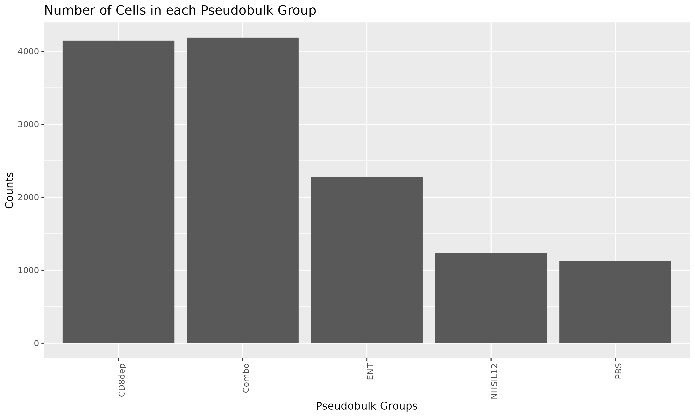

Differential Expression Analysis
SCWorkflow-DEG.RmdDE with Find Markers
This function performs a DE (differential expression) analysis on a merged Seurat object to identify expression markers between different groups of cells (contrasts). This analysis uses the FindMarkers() function of the Seurat Workflow.
Methodology Differential expression analysis (DEG) is a fundamental technique in single-cell genomics research. The goal of DEG analysis is to identify genes that exhibit significant changes in expression levels between different groups of cells or conditions, thereby uncovering potential markers that distinguish these groups. This function takes a merged Seurat object [1] as input, expected to contain single-cell data from multiple samples, along with relevant metadata and SingleR annotations, which provide information about cell identity. To perform the DEG analysis, the user can choose from various statistical algorithms, such as MAST [2], wilcox [3], bimod [4], and more, which accommodate different types of experimental designs and assumptions about the data. The user can control the sensitivity of the analysis by setting the minimum fold-change in gene expression between the groups to be considered significant. Additionally, users can specify the assay to be used for the analysis, whether it is the scaled data (SCT) or raw RNA counts. For best results, it is recommended to use this function with well-curated and preprocessed single-cell data, ensuring that the Seurat object contains relevant metadata and SingleR annotations. Users should carefully select the samples and contrasts based on their experimental design and research questions. Additionally, exploring different statistical algorithms and adjusting the threshold can fine-tune the DEG analysis and reveal more accurate gene expression markers.
DEG_table=degGeneExpressionMarkers(object = Anno_SO$object,
samples = c("PBS", "ENT", "NHSIL12", "Combo", "CD8dep" ),
contrasts = c("0-1"),
parameter.to.test = "SCT_snn_res_0_2",
test.to.use = "MAST",
log.fc.threshold = 0.25,
assay.to.use = "SCT",
use.spark = F
)| Gene | C_0_vs_1_pval | C_0_vs_1_logFC | C_0_vs_1_pct1 | C_0_vs_1_pct2 | C_0_vs_1_adjpval |
|---|---|---|---|---|---|
| Cd274 | 0 | -1.1999485 | 0.369 | 0.808 | 0 |
| Fth1 | 0 | -1.4170103 | 1.000 | 1.000 | 0 |
| Mmp12 | 0 | -3.0512305 | 0.163 | 0.635 | 0 |
| mt-Atp6 | 0 | 0.9790296 | 1.000 | 0.984 | 0 |
| mt-Co2 | 0 | 1.0289905 | 1.000 | 0.982 | 0 |
| mt-Co3 | 0 | 0.9775768 | 1.000 | 0.981 | 0 |
- https://satijalab.org/seurat/
- https://rglab.github.io/MAST/
- Dalgaard, Peter (2008). Introductory Statistics with R. Springer Science & Business Media. pp. 99–100
- https://en.wikipedia.org/wiki/Multimodal_distribution
Pseudo Bulk Method
Aggregate Seurat Counts
This function is the first step in a Pseudobulk analysis of your scRNA-seq dataset. It groups cells based on chosen categorical variable(s) in the Seurat Object’s Metadata and aggregates the counts of each gene in each group.
The output is a table of aggregate expression in which the rows are genes and the columns are values found in the chosen Pseudobulk variable. If you select multiple categories to aggregate by (e.g. Category1: A,B,C and Category2: D,E,F), cells will be grouped by combinations of category variables (e.g. A_D, A_E, A_F, B_D, B_E, B_F). By default, gene counts are averaged across cells in each group.
AggOut=aggregateCounts(object=Anno_SO$object,
var.group=c( "orig.ident"),
slot="data")